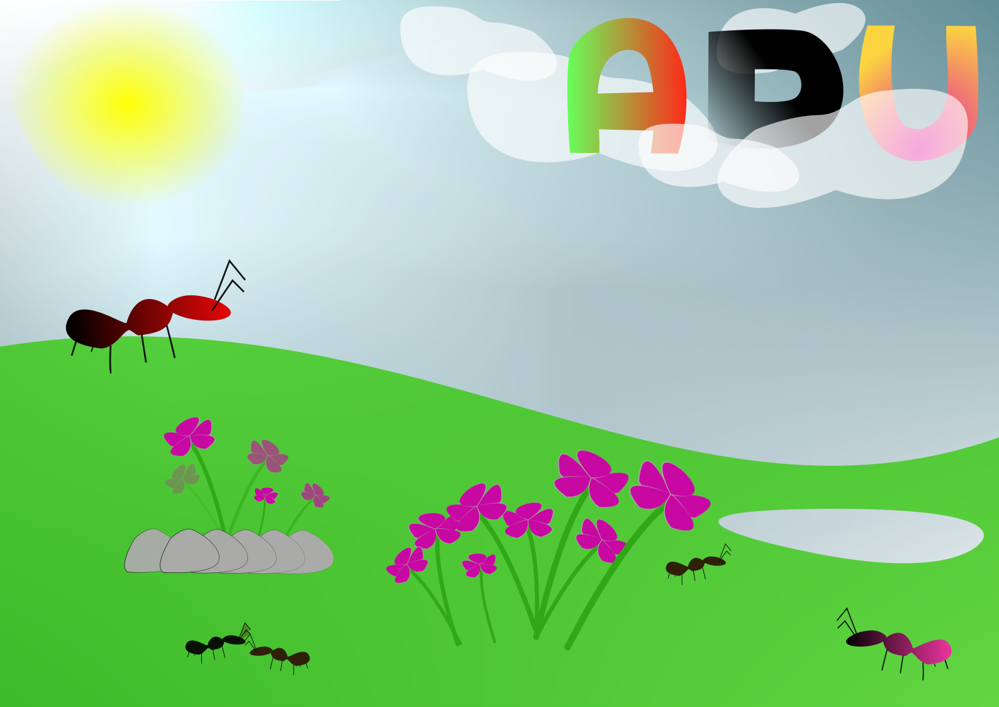
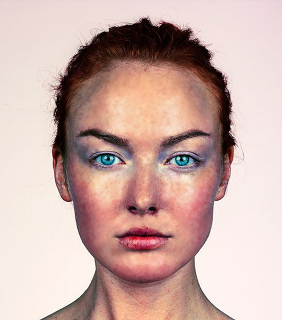
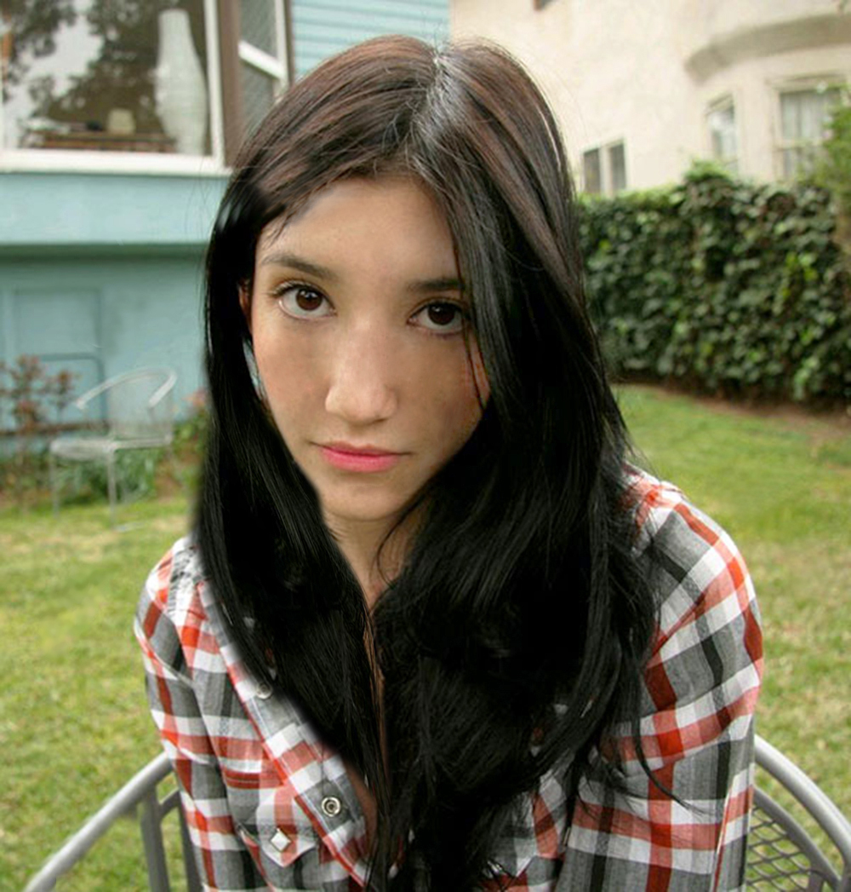
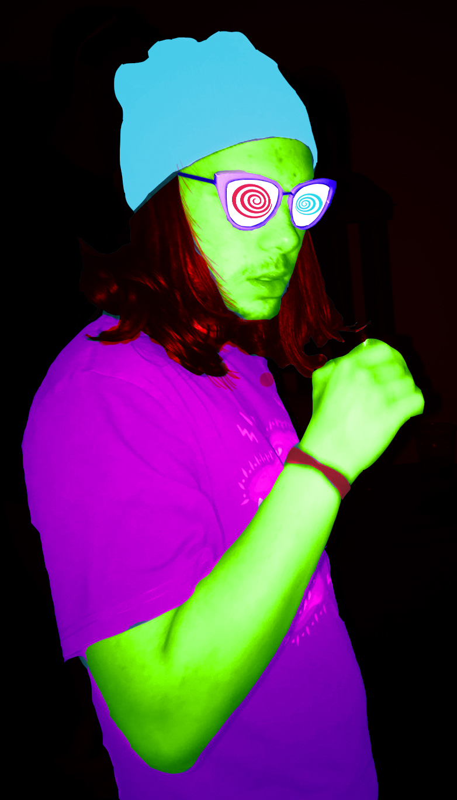
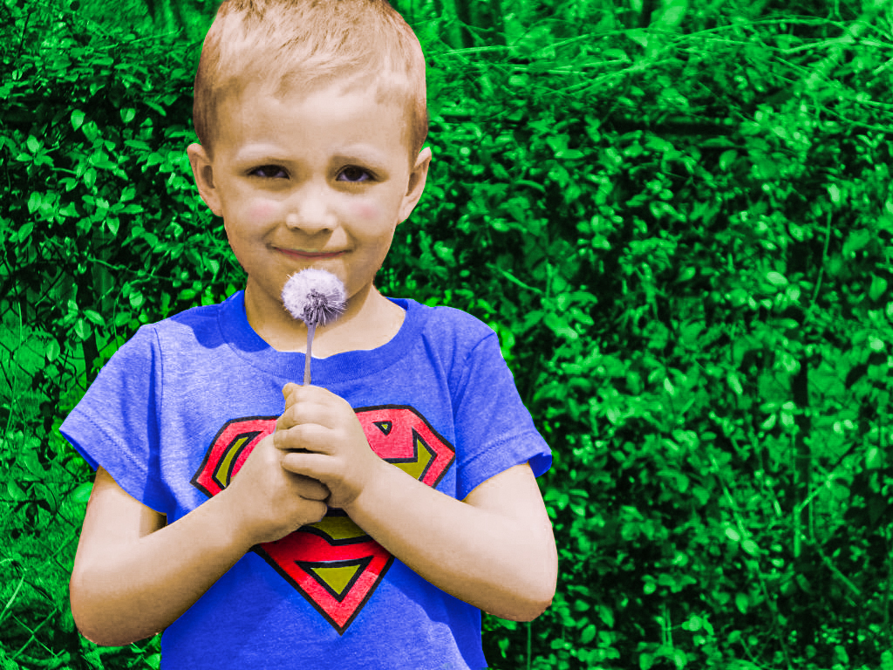
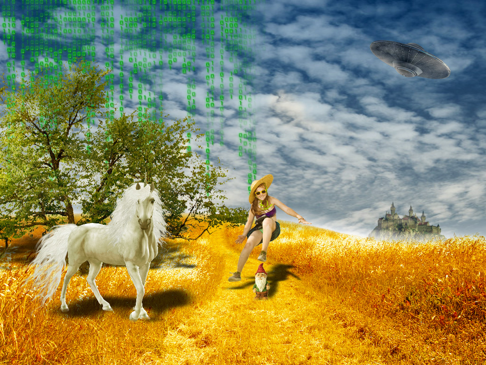
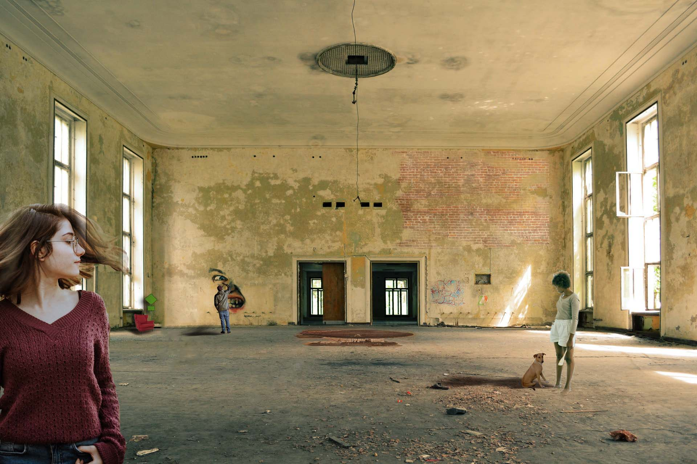

- Projektni zadatak, 1 kolokvij

- 5. Vježba retuširanje


- 6. Vježba koloriranje


- 7. Vježba Fotomontaža

- Projektni zadatak, 2 kolokvij

- 8.Vježba ADOBE PREMIERE/PHOTOSHOP: editiranje videa
- 9.Vježba ADOBE PREMIERE: obrada videa, zvuka i teksta